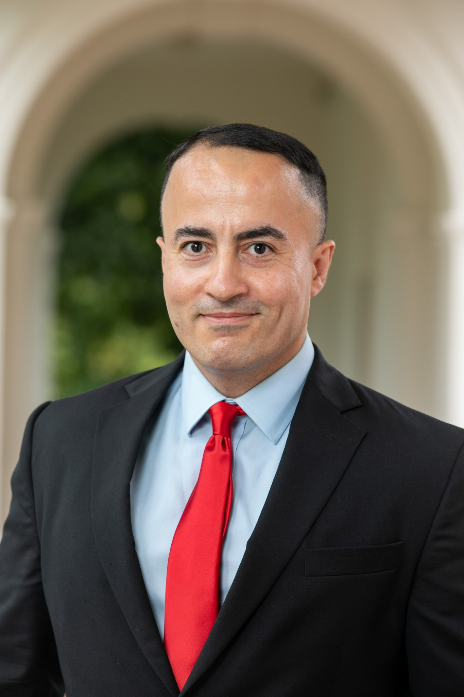
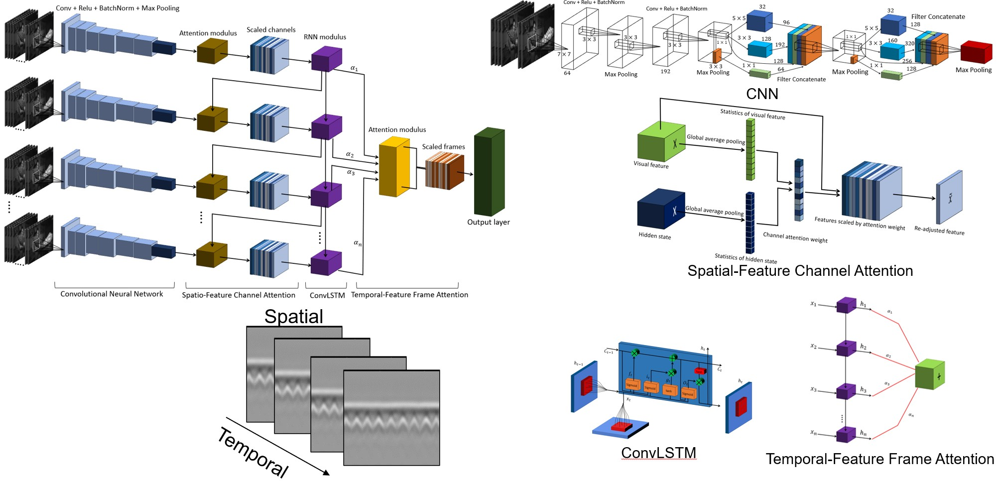
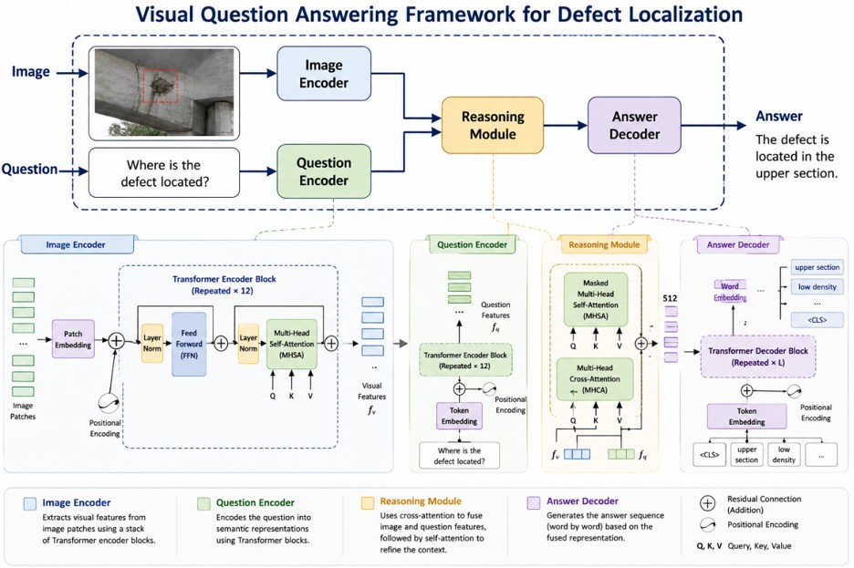
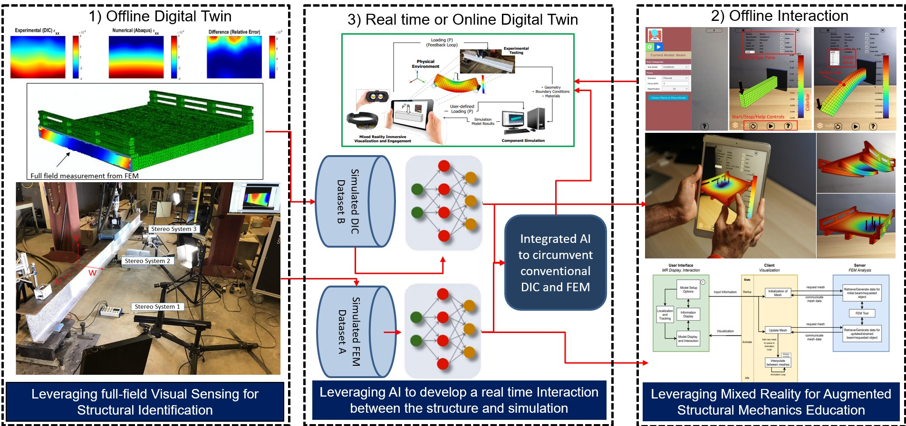
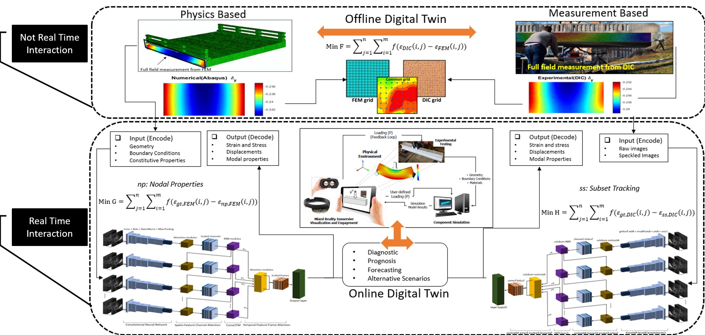

AI for Structural Engineering
Deep learning, engineered neural networks, transfer learning, and intelligent structural identification.
Structural Engineering · Artificial Intelligence · Nondestructive Evaluation · Digital Twins
About
I am a civil and structural engineering researcher working at the intersection of structural mechanics, computer vision, deep learning, finite element modeling, digital twins, and physics-informed neural networks. My work focuses on translating advanced sensing and AI methods into practical tools for infrastructure assessment, damage detection, and structural decision-making.

Research Areas
Deep learning, engineered neural networks, transfer learning, and intelligent structural identification.
Full-field sensing, damage detection, structural identification, computer vision, and image-based diagnostics.
AI-assisted NDE interpretation, visual question answering, GPR data analysis, laser scanning, and automated inspection.
Physics-constrained learning for subsurface sensing and prediction, including electromagnetic-wave-informed modeling.
Adaptive digital twins, immersive structural visualization, AR/VR, and cyber-physical infrastructure systems.
Finite element model updating, bridge load rating, structural optimization, testing, and sensor-data integration.
Featured Research

Physics-constrained learning and deep-learning architectures for subsurface sensing and prediction.

Vision-and-language methods for automated NDE image interpretation, structural defect localization, and natural-language reporting.

Connecting sensing, simulation, artificial intelligence, and immersive interaction for structural systems.

Finite-element-model-driven strategies combining field measurements, image-based sensing, testing, and sensor data.
Publications
Experience
Turner-Fairbank Highway Research Center · Federal Highway Administration
University of Virginia · Engineering Systems and Environment
University of Massachusetts Lowell · Mechanical Engineering
University of Virginia · Engineering Systems and Environment
Education
Ph.D., Civil Engineering
University of Virginia
M.Sc., Civil Engineering
Sharif University of Technology
B.Sc., Civil Engineering
University of Tabriz
Technical Skills
Contact
I am interested in research and professional opportunities involving structural engineering, AI, digital twins, structural health monitoring, computer vision, and nondestructive evaluation.